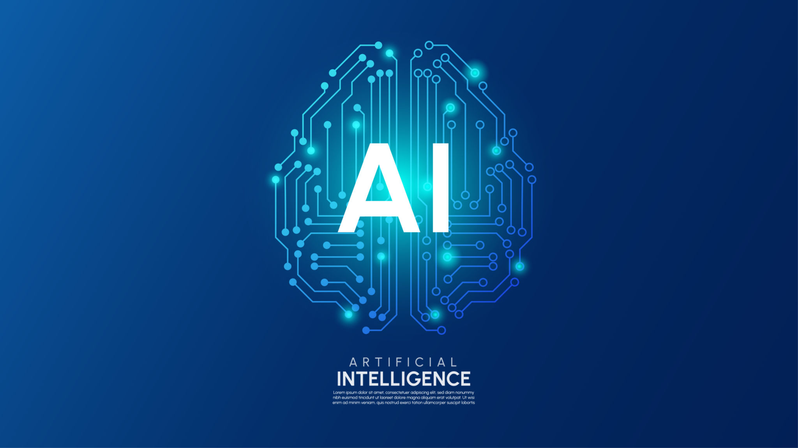
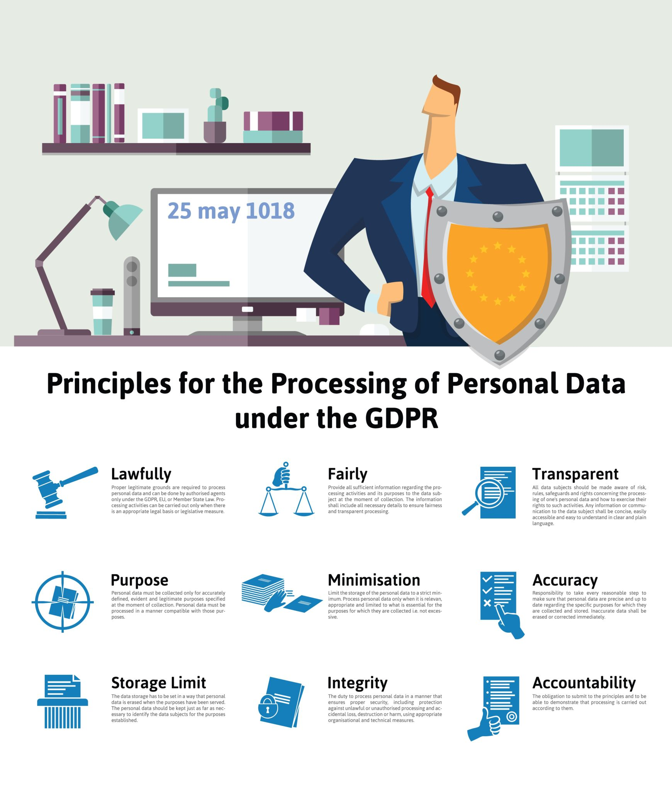

Dans le cadre de mon BTS SIO option SISR, cette veille porte sur l'intelligence artificielle et son évolution rapide. L'IA est aujourd'hui un élément central de la transformation numérique des entreprises.
Elle est utilisée aussi bien pour automatiser des tâches que pour analyser des données complexes, améliorer la sécurité et optimiser les systèmes d'information.

L'IA est intégrée aux SI pour automatiser la supervision, la maintenance et l'optimisation des infrastructures informatiques.
Analyse des performances serveurs, détection d'anomalies réseau, anticipation des pannes — amélioration de la disponibilité des services.
Pour un technicien SISR, ces outils représentent un gain de temps important, mais nécessitent une surveillance humaine.
En cybersécurité, l'IA joue un rôle clé dans la détection des menaces et l'analyse des comportements suspects.
Elle est utilisée dans les IDS/IPS, SIEM et solutions de surveillance pour identifier rapidement les attaques.
Les cybercriminels utilisent également l'IA pour automatiser leurs attaques, obligeant les entreprises à renforcer leurs défenses.
Les systèmes d'IA reposent sur l'exploitation de grandes quantités de données, souvent personnelles ou sensibles.
Les entreprises doivent respecter le RGPD : sécurité des données, limitation des accès, transparence des traitements.
Le technicien SISR joue un rôle essentiel dans la protection des BDD, les sauvegardes et la gestion des droits d'accès.

L'AI Act est un règlement européen encadrant l'utilisation de l'IA selon le niveau de risque des systèmes.
Il classe les systèmes d'IA en catégories allant des usages interdits aux usages libres, avec des obligations strictes pour les systèmes à haut risque.
Pour les entreprises : analyse des risques, documentation technique et responsabilité accrue.
| Date | Source | Sujet | Résumé | Enjeux / Impacts | Impact SISR |
|---|---|---|---|---|---|
| Janvier 2025 | Coexya | AI Act | Encadrement légal de l'IA en Europe. | Conformité obligatoire. | Sécurité et conformité. |
| Février 2025 | CNIL | Données personnelles | Respect strict du RGPD. | Risques juridiques. | Sécurisation des données. |
| Mars 2025 | ANSSI | Cyberattaques | Automatisation des attaques. | Renforcement sécurité. | Surveillance et incidents. |
| Avril 2025 | Le Monde Informatique | Automatisation | Déploiement d'outils IA. | Dépendance accrue. | Supervision humaine. |
| Mai 2025 | Google Alerts | IA générative | Création automatique de contenu. | Fuite de données. | Contrôle des accès. |
| Juin 2025 | ANSSI | Supervision intelligente | Analyse prédictive. | Haute disponibilité. | Analyse humaine des alertes. |
Pour mener à bien cette veille technologique, j'utilise plusieurs outils et sources d'information complémentaires qui me permettent de rester informé en continu des évolutions du secteur.
Feedly — Agrégateur de flux RSS que j'utilise pour centraliser les articles de mes sources favorites (ANSSI, Le Monde Informatique, ZDNet, IT-Connect) dans un seul tableau de bord. Permet de classer par catégorie et de ne rien manquer.
Google Alerts — Alertes configurées sur des mots-clés spécifiques : « intelligence artificielle cybersécurité », « AI Act Europe », « RGPD données IA », « vulnérabilités réseau ». Je reçois un récapitulatif quotidien par mail avec les nouveaux articles correspondants.
LinkedIn — Suivi de pages et profils spécialisés en cybersécurité, administration système et infrastructures IT. Permet de repérer les tendances et les retours d'expérience de professionnels du secteur.
Twitter / X — Suivi de comptes techniques (ANSSI, CERT-FR, chercheurs en sécurité) pour les alertes en temps réel sur les vulnérabilités et les incidents de sécurité.
Reddit — Suivi des communautés r/sysadmin, r/networking et r/cybersecurity pour les discussions techniques, retours d'expérience terrain et veille sur les bonnes pratiques.
YouTube — Chaînes techniques spécialisées en administration système, réseau et cybersécurité pour des tutoriels, démonstrations et analyses de cas concrets.
ANSSI (Agence Nationale de la Sécurité des Systèmes d'Information) — Bulletins d'alerte, recommandations de sécurité et guides de bonnes pratiques.
CNIL — Suivi des évolutions réglementaires liées au RGPD et à la protection des données personnelles dans le contexte de l'IA.
CERT-FR — Alertes de sécurité, avis de vulnérabilités et recommandations techniques en temps réel.
Le Monde Informatique — Articles de fond, analyses et actualités sur les infrastructures, le cloud, la cybersécurité et la transformation numérique.
ZDNet — Actualités tech, analyses de marché et retours d'expérience sur les solutions IT.
IT-Connect — Tutoriels, guides et actualités orientés administration système, réseau et sécurité.
Coexya — Cabinet spécialisé dans la transformation numérique et la conformité réglementaire, source utilisée pour le suivi de l'AI Act et des réglementations européennes sur l'IA.